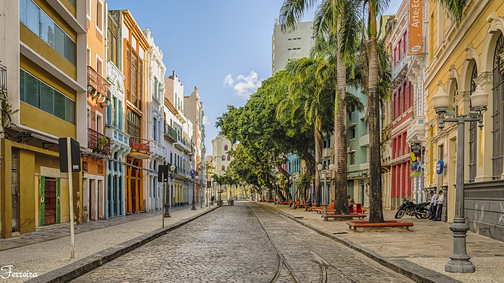

1. Rua do Bom Jesus
Considerada uma das ruas mais bonitas do mundo, ela é famosa por seus casarios coloniais coloridos, palmeiras imperiais e pelo chão de paralelepípedo. É onde fica também a Sinagoga Kahal Zur Israel, a primeira das Américas.
